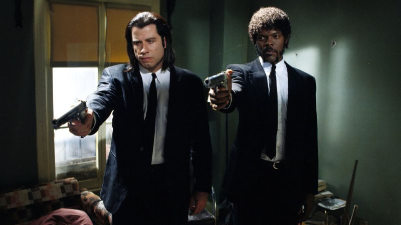
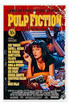

Pulp Fiction is a 1994 American crime film written and directed by
Quentin Tarantino from a story he conceived with Roger Avary.[3] It
tells four intertwining tales of crime and violence in Los Angeles,
California. The film stars John Travolta, Samuel L. Jackson, Bruce
Willis, Tim Roth, Ving Rhames, and Uma Thurman. The title refers to
the pulp magazines and hardboiled crime novels popular during the
mid-20th century, known for their graphic violence and punchy
dialogue. Tarantino wrote Pulp Fiction in 1992 and 1993,
incorporating scenes that Avary originally wrote for True Romance
(1993). Its plot occurs out of chronological order. The film is also
self-referential from its opening moments, beginning with a title
card that gives two dictionary definitions of "pulp". Considerable
screen time is devoted to monologues and casual conversations with
eclectic dialogue revealing each character's perspectives on several
subjects, and the film features an ironic combination of humor and
strong violence.
The film's title refers to the pulp magazines and hardboiled crime
novels popular during the mid-20th century, known for their graphic
violence and punchy dialogue.

Main Characters
Jules Winnfield
Vincent Vega
Mia Wallace
Butch Coolidge
Winston Wolfe
Plot Summary
Narrative structure Pulp Fiction's narrative is told out of
chronological order and follows three main interrelated stories that
each have a different protagonist: Vincent Vega, a hitman; Butch
Coolidge, a prizefighter; and Jules Winnfield, Vincent's business
partner.[9] The film begins with a diner hold-up staged by a couple,
then begins to shift from one storyline to another before returning
to the diner for the conclusion. There are seven narrative
sequences; the three primary storylines are preceded by intertitles:
"Prologue – The Diner" (i) Prelude to "Vincent Vega and Marsellus
Wallace's Wife" "Vincent Vega and Marsellus Wallace's Wife" Prelude
to "The Gold Watch" (a – flashback, b – present) "The Gold Watch"
"The Bonnie Situation" "Epilogue – The Diner" (ii) If the seven
sequences were ordered chronologically, they would run: 4a, 2, 6, 1,
7, 3, 4b, 5. Sequences 1 and 7 partially overlap and are presented
from different points of view, as do sequences 2 and 6. According to
Philip Parker, the structural form is "an episodic narrative with
circular events adding a beginning and end and allowing references
to elements of each separate episode to be made throughout the
narrative".[10] Other analysts describe the structure as a "circular
narrative".[11][12]
Reception and Legacy
"Pulp Fiction" is regarded as a significant work in the postmodern
genre, and it is frequently cited as one of the greatest films of
all time. It won the Palme d'Or at the Cannes Film Festival and was
nominated for seven Oscars, winning Best Original Screenplay.

Famous Quotes
Character
Quote
Scene
Jules
"Say 'what' again. Say 'what' again, I dare you, I double dare
you!"
Apartment
Vincent
"You know what they call a Quarter Pounder with Cheese in
Paris?"
Car ride
Mia
"Don't be a square."
Dinner at Jack Rabbit Slim's
Butch
"Zed's dead, baby. Zed's dead."
Motel
Winston Wolfe
"I'm Winston Wolfe. I solve problems."
Clean-up
Summary
Hitmen Jules Winnfield and Vincent Vega arrive at an apartment to
retrieve a briefcase for their boss, gangster Marsellus Wallace, from
a business partner, Brett. After Vincent checks the contents of the
briefcase, Jules shoots one of Brett's associates. He declaims a
passage from the Bible, and he and Vincent kill Brett for trying to
double-cross Marsellus. Another man bursts out of the bathroom and
fires at them, but every shot misses; after briefly checking
themselves for wounds, Jules and Vincent shoot him dead. While driving
away with Brett's associate Marvin, Jules professes that their
survival was a miracle, which Vincent disputes. Vincent accidentally
fatally shoots Marvin in the face, and covering Vincent, Jules, and
the car interior in blood in broad daylight. They hide the car at the
home of Jules's friend Jimmie, who demands they deal with the problem
before his wife, Bonnie, comes home. Marsellus sends a cleaner,
Winston Wolfe, who directs Jules and Vincent to clean the car, hide
the body in the trunk, dispose of their bloody clothes, and take the
car to a junkyard. At a diner, Jules tells Vincent that he plans to
retire from his life of crime, convinced that their "miraculous"
survival at the apartment was a sign of divine intervention. While
Vincent is in the bathroom, a couple, "Pumpkin" and "Honey Bunny",
hold up the restaurant and demand Marsellus's briefcase. Jules
distracts Pumpkin with its contents, and then overpowers him and holds
him at gunpoint; Honey Bunny becomes hysterical and points her gun at
Jules. Vincent returns with his gun aimed at her, but Jules defuses
the situation. He recites the biblical passage, expresses ambivalence
about his life of crime, and allows the robbers to take his cash and
leave. Jules and Vincent leave the diner with the briefcase in hand.
They take the briefcase to Marsellus and wait while he bribes boxer
Butch Coolidge to take a dive in his upcoming match. The next day,
Vincent purchases heroin from his drug dealer, Lance. He shoots up and
drives to meet Marsellus's trophy wife, Mia, having agreed to escort
her while Marsellus is out of town. They eat at Jack Rabbit Slim's, a
1950s-themed restaurant, and participate in a twist contest, then
return home. While Vincent is in the bathroom, Mia finds his heroin
and snorts it, mistaking it for cocaine. She suffers an overdose;
Vincent rushes her to Lance's house, where they revive her with an
injection of adrenaline into her heart. Vincent drops Mia off at her
home, and the two agree never to tell Marsellus about the incident.
Butch bets the bribe money on himself and double-crosses Marsellus,
winning the bout but accidentally killing his opponent as well.
Knowing that Marsellus will send hitmen after him, he prepares to flee
with his girlfriend, Fabienne, but discovers she has forgotten to pack
a gold watch passed down to him through his family. Returning to his
apartment to retrieve it, he notices a gun on the kitchen counter and
hears the toilet flush. When Vincent exits the bathroom, Butch shoots
him dead and departs. When Marsellus spots Butch stopped at a traffic
light, Butch rams his car into him, then gets hit by an oncoming
vehicle, leaving both of them injured and dazed. Once Marsellus
regains consciousness, he shoots at Butch, chasing him into a
pawnshop. Butch gains the upper hand and is about to shoot Marsellus,
but the shop owner, Maynard, captures them at gunpoint and binds and
gags them in the basement. Maynard and his accomplice Zed take
Marsellus into another room and begin to rape him, leaving the "gimp"
– a silent figure in a bondage suit – to watch over Butch. Butch
breaks loose and knocks the gimp unconscious. Instead of fleeing, he
decides to save Marsellus, and arms himself with a katana from the
pawnshop. He kills Maynard and frees Marsellus, who shoots Zed in the
crotch with Maynard's shotgun. Marsellus informs Butch that they are
even, and to tell no one about the rape and to depart Los Angeles
forever. Butch picks up Fabienne on Zed's motorcycle, and they ride
away.